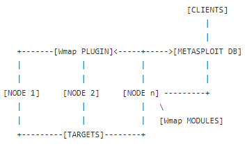
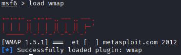
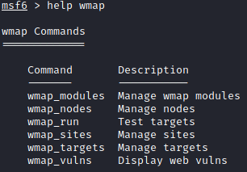
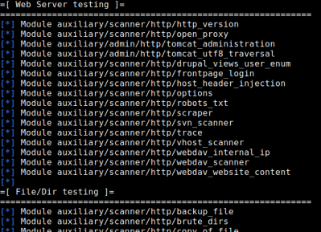
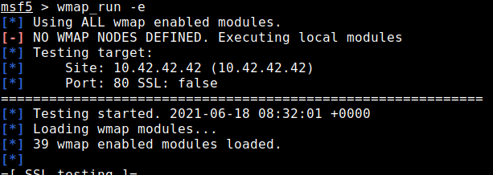
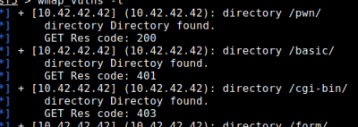

WMAP
GitHub: https://github.com/rapid7/metasploit-framework/blob/04e8752b9b74cbaad7cb0ea6129c90e3172580a2/plugins/wmap.rb
Architecture(How it works)

WMAP is a Web assessment plugin for the metasploit framework from Efrain Torres (@etlow), a tool that is been presented for the first time at the DefCon 17 (August 2009).
The best documentation of this plugin can be found here: documentation github
Phases
1. Metasploit Crawler/Spider
Metasploit includes its own application with spidering/crawling capabilities.
The below crawlers are not serviceable replacements for Burp or ZAP, but be aware of them as a potential feature to employ when needed.
◇ auxiliary/crawler/msfcrawler (better, developed directly by Efrain Torres)
◇ auxiliary/scanner/http/crawler
2. Import sites to the database
◇ use db_import to import previous scans from other tools
root@kali# systemctl start postgresql
root@kali# msfdb init
root@kali# msfconsole
msf> workspace -a [nameNewWorkspace] #create a new workspace
msf> db_import [file] #import file
root@kali# msfdb init
root@kali# msfconsole
msf> workspace -a [nameNewWorkspace] #create a new workspace
msf> db_import [file] #import file
◇ import manually with wmap_sites
msf> wmap_sites -a www.example.net,http://192.168.1.66
3. Launch WMAP plugin
msf> load wmap
msf> help wmap
msf> help wmap


4. Targets of wmap
The target of wmap are the ones that are stored in the database after that we have crawled/spidered (point 1) or imported (point 2)
msf> wmap_sites -l #list of posssible targets in the database
msf> wmap_targets -t www.example.net,http://192.168.1.66 #define targets
msf> wmap_targets -l #list of targets
msf> wmap_targets -t www.example.net,http://192.168.1.66 #define targets
msf> wmap_targets -l #list of targets
5. List of enabled modules by default
msf> wmap_run -t

6. Launch only modules that we want (from the previous list)
To include “external” modules of metasploit that are not originally tought for WMAP see here and here
msf> wmap_run -h
msf> wmap_run -m [regex] #Launch only modules that name match provided regex
msf> wmap_run -p [regex] #Only test path defined by regex
msf> wmap_run -m [regex] #Launch only modules that name match provided regex
msf> wmap_run -p [regex] #Only test path defined by regex

8. Launch the scan
msf> wmap_run -e

9. Results of the scan
msf> wmap_vulns -l

Bibliography:
https://null-byte.wonderhowto.com/how-to/use-metasploits-wmap-module-scan-web-applications-for-common-vulnerabilities-0187572/